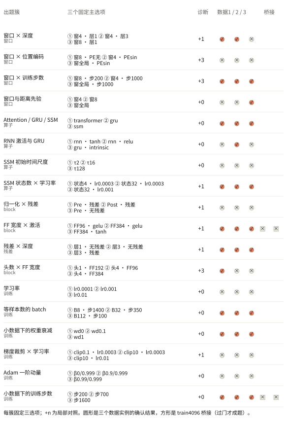
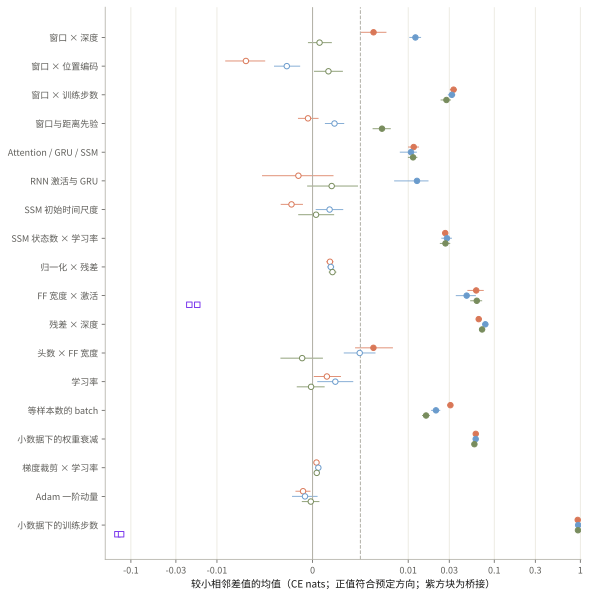
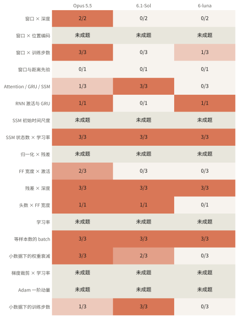

29 道三选排序题通过确认：更大批次、跨条件桥接与重排探针
第二批把每簇数据实例扩到三个，重发第一批 20 题并新增 9 题，三个模型在同一协议下作答：Opus 5.5 23/29，6.1-Sol 18/29，6-luna 11/29。每题附一个字母重排探针单独计分；4 个 train4096 桥接条件均未通过确认门，按协议不成题。
- 18 个出题簇 × 3 个数据实例
- 29 道主题 + 29 个重排探针
- 16 个新训练 seed
- 随机完整排序 16.7%
与第一批的关系
第一批（2026-10-13）的 36 个训练结果经逐字节哈希校验导入本批，不重复训练；20 道成题按原字母分配重发，成绩可直接对比。每簇新增第三个数据实例（种子 731903），发现阶段用 6 个 seed、确认仍用 16 个 seed。本批协议、模板与题面相对第一批有三处机器可读的升级：预算字段由编译器按 budget_semantics 重算；每个选项导出实际改动字段并标注单因素/析因/捆绑配方；答案统一为 {"best_to_worst":["C","B","A"]}（best 指 held-out loss 最低），解析器后向兼容第一批字母连写。
每簇固定三个主选项，局部对照用于检验解释
出题簇是可重复生成同类比较的模板。本批共用 20 份数据、212 个去重训练配置。教师权重按实际内容核验，共 6 份不同权重。每题共享数据，允许模板明确改变模型和训练预算。

FF 指前馈子层，PE 指位置编码。跨家族比较（Attention/GRU/SSM、RNN 激活与 GRU）同时改变 block、参数量与初始化，在题面元数据里标注为捆绑配方，不能解释为只改变一个混合算子的实验。
29 / 58 个固定三选题通过确认
先用验证集固定排序方向（复用实例沿用第一批已确认方向），再在测试集用 16 个新训练 seed 确认。配对单侧符号检验检查各 seed 的胜负——它检验固定数据与协议下的逐 seed 胜负稳定性，不是期望 CE 均值差检验；116 个相邻比较一同做 Holm 校正，阈值 0.05，再要求均值差至少 0.005 nats。范围重叠本身不作为拒绝条件，未通过的题不替换选项。

同一组三选项换到 train4096 条件：0/4 通过确认门
桥接复用同种子实例的同一三选项、同一教师、同一测试集，只把训练集从 256 扩到 4096，直接进 16 seed 确认门，假设顺序取基础实例的已确认顺序。这批 4 个桥接无一过门，下表逐对列出；方向不稳定或差距缩小的含义是这些结论在更大训练预算下不保持，不反证原条件的结果。
| 桥接实例 | 相邻对（假设好→差） | 逐 seed 胜场 | Holm p | 均值差 nats |
|---|---|---|---|---|
| FF 宽度 × 激活 · 数据 1 → train4096 | c_a3577d89e99bebab851c30a51386f3ab → c_7e4c6a93b7bdc23626054b38737ad4fd | 0/16 | 1.0000 | -0.01694 |
| c_7e4c6a93b7bdc23626054b38737ad4fd → c_11558926a7bee4882cab86b91d327abc | 0/16 | 1.0000 | -0.00149 | |
| FF 宽度 × 激活 · 数据 2 → train4096 | c_9e03f6e410e0499130d51592add2a0d6 → c_b9a4826c420639d249c97104189eda5e | 0/16 | 1.0000 | -0.02095 |
| c_b9a4826c420639d249c97104189eda5e → c_f2bc6cd6bc2a04e3ef3843da977edb77 | 1/16 | 1.0000 | -0.00221 | |
| 小数据下的训练步数 · 数据 1 → train4096 | c_5632803c564f70576fa0185315ee6272 → c_c87d2fdf754ea671ce37f714254fe4ad | 0/16 | 1.0000 | -0.14352 |
| c_c87d2fdf754ea671ce37f714254fe4ad → c_5cc00869356680ed35dd2d005a0d501b | 0/16 | 1.0000 | -0.02513 | |
| 小数据下的训练步数 · 数据 2 → train4096 | c_7d0b5d2ea33278d306394c6ac7997b9b → c_c241301d8c58876950856298c0583eff | 0/16 | 1.0000 | -0.12992 |
| c_c241301d8c58876950856298c0583eff → c_2d073d644c9c30c13f9dd68689b13f57 | 0/16 | 1.0000 | -0.02823 |
模型成绩：主题与重排探针分开计
Opus 5.5 23/29，6.1-Sol 18/29，6-luna 11/29。每格是完整排序正确数 / 作答数。灰格“未成题”表示该簇没有通过确认的题，不计零分。

每簇最多三题且共享教师、数据和候选，不能把题目视作相互独立的广泛能力样本。这里不报告按独立题目计算的模型能力置信区间。
| 模型 | 主题（29） | 重排探针（29） | 探针↔主题答案一致 | 重发题（20，可对比第一批） | 新数据题（9） |
|---|---|---|---|---|---|
| Opus 5.5 | 23/29 | 22/29 | 24/29 | 16/20 | 7/9 |
| 6.1-Sol | 18/29 | 16/29 | 24/29 | 12/20 | 6/9 |
| 6-luna | 11/29 | 10/29 | 23/29 | 8/20 | 3/9 |
探针把三个选项的字母整体轮转一位（同候选、同题面，仅标签重排），单独计分、不计入成绩。探针↔主题一致指探针答案映射回主题字母后与主题答案完全相同；不一致说明排序受字母位置影响。重发题沿用第一批字母分配：Opus 5.5 与第一批同为 16/20，6.1-Sol 由 11/20 变为 12/20，6-luna 第一批 18 题作答 6 题正确、本批 20 题全作答 8 题正确。第一批 58 份回答中有 6 份最终排序与文字解释矛盾；本批 87 份主题回答按同一规则的自动扫描为 0 份，JSON 答案格式基本消除了这一类歧义。
这批题目现在能做什么
作固定评测集：29 道主题与 29 个探针的协议、选项与判定已冻结，可直接测新模型，成绩与本页三个模型同口径可比；其中 20 道重发题还能与第一批（2026-10-13）对比同一模型的前后变化。
作自查与教学材料：下方逐题区可展开完整题面（共享 base code 与三个选项的独立 diff）自测排序，再对照确认 seed 的训练曲线、最终测试 CE 与模型公开解释；探针行单独标注该模型的答案受字母位置影响的程度。
作出题资产：18 个出题簇与模板 DSL v2 保留在仓库；配套候选资产库 candidate_library_v1_20261014（6 个教师语境 × 18 个取值网格、8 个数据种子、632 个去重候选、2528 次训练全部跑通）已落成，后续出新题从库内导入候选并跑确认门即可成题，不必重新训练。
作自动研究的搜索基板：基于该资产库的 autoresearch 自动展开已在进行中——用 GPT 6.1 Sol 多并发搜索，目标是在相同时间预算内、对单个或少数几个数据集搜索到最优；该过程的中间状态不收录进本页，结果成型后另行报告。
逐题对照：题面、训练曲线与模型解释
每题可先展开完整题面并自测排序，再对照训练曲线与模型公开 explanation。探针行单独展示，不计入上方成绩。解释审核沿用第一批口径：自动扫描文字与 JSON 答案是否矛盾（本批为零）；更细的机制层面审核尚未逐条进行，阅读时请把模型解释当作待检验的叙述而非已证机制。
完整题目（共享 base code 与三个选项的独立 diff）
这些比较已保存为可重复使用的出题模板
模板 DSL v2 定义数据条件、三个主选项、局部对照、预算语义、统计目标与桥接变体。增加一簇时复制一条模板，保留固定主选项。编译器 检查实现支持、按 budget_semantics 重算派生预算、导出实际改动字段，再交给生成与训练管线。第一批模板与批次冻结不改。
结论边界与原始证据
显著性针对这些固定数据下的训练随机性（逐 seed 配对胜负 + 观测均值差），不是对所有教师或数据分布的推广，也不是期望 CE 均值差的检验。
桥接桥接结论只覆盖所测的 train4096 一个条件；不过门说明结论在该条件下不保持，不反证原条件结果。
实际运行的型号各对每题回答一次。解释审核的自动扫描只覆盖文字与答案的矛盾；模型公开 explanation 是叙述，不是对内部推理过程的观测。
探针只测字母位置稳定性一种扰动；一致不代表结论稳健，不一致说明答案部分来自格式先验。